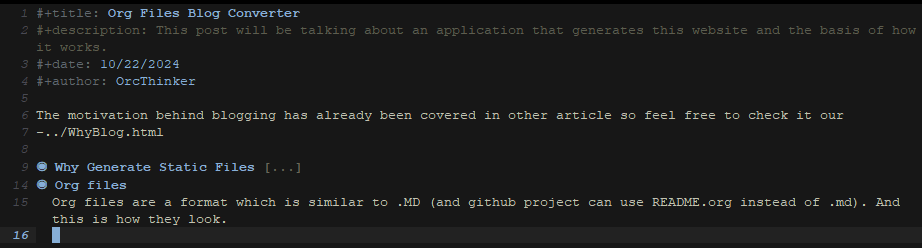

Org Files Blog Converter
This post will be talking about an application that generates this website and the basis of how it works.
The motivation behind blogging has already been covered in other article so feel free to check it our
Why Generate Static Files
Let's start with why the blog generator came to exist. Once I've decided that I want to store my ideas somewhere I began wondering what would be most fun way to write posts for me. One idea came to mind instantly. Since forever I've been taking notes in my preferred IDE. For a long time it has been VS Code but ever since I've tried Doom EMACs I've beeen converted to "the supreme IDE" which it is. Thankfully EMACs not only is alot of fun to work with but if you look for a way to make notes in it you will most likely run across org-mode. That is exactly what I've been using ever since.
I've started working abit on my blog in C# .NET as that is my primary stack and the one I am most comoftable with web-wise. After few coding sessions I had a simple page and was left thinking "it's basically static pages". After I had that tought I knew that that is a good time and place to try to write my own generator in odin-lang. Especially since noone (maybe some...) likes spending money when they don't have to and GitHub pages exist and are free.
And so the new project begun.
Org files
Org files are a format which is similar to .MD (and github project can use README.org instead of .md). And this is how they look.
As you can see this is a early version of this post but it is in my EMACs. This is how I usually write work notes, learning session notes and pretty much everything that I write on PC instead of my physical, real notebook.
There are few things that all of my files should have to be eligible for a blog post. First they have to have 4 starting fields: title, description, date, author. Those are used for the navigation on index and blogList page as well as for posts body. As for the rendering of the posts body I simply check for some keywords to understand what element we want to render in HTML.
The key thing we need to know about org files here is that they use "*" sign to indicate heading and we use multiple "*" signs to create subheadings. ex.: "*" is heading, following "**" would be it's subheading.
Generation
The app itself should do 1 thing: take the org files folder and create a gitHub pages blog out of them automatically.
To do so I had simply created 2 html pages that won't change much: "home" and "blog" page. Those 2 are mostly non-generated html. To fill out those pages I read the folder/file structure of the folder that holds my org files. Based on that I take all the files that have the extension of ".org" and make posts out of them. Knowing that I take information for the 3 newest posts (based on .org files #+date: field) and inject them into "home" view. I do the same for "blog" view however I inject all the posts instead of 3 newest ones.
As for the rest of the pages, they are blog posts. The whole post (like this one) is being created from .org file. I simply read the .org file and look for keywords. Based on them I render proper html element. Those are the keywords:
"#+title" - title of the post
"#+description" - description of the post that will be directly under title
"#+date" - only used for index and home page blog post tiles to indicate when the article was created
"#+author" - same as above, indicates who wrote article (so most likely always me, a.k.a "OrcThinker")
"#+begin_quote" and "#+end_quote" - starts and ends quote block
Like this one
"#+begin_src" and "#+end_src" - starts and ends code block
Like this one;
"[[" and "]]" - image on page
"-" - for links (in future it should be for bullet points but now it's bullet point and )
any new line of text is treated as a new paragraph unless special conditions are met
Based on this logic the body of a post is created and injected into a layout which all of the pages share.
Another important thing and for now the last piece of the puzzle are static files like images and .css. There are only 2 types of them I distinguish right now.
post image - if a post has a image that is used in it with "[[]]" then I will have to copy the image to a proper folder so that it will be available to the page. To get them in correct place I simply store information about each of those images I run into when scanning .org file and later on I check whether they exist and if they do I make a copy of them in the target folder.
Not a post image - Those are all the files that don't change too much. Right now I have only 3 groups I include in those: site.css, fonts and websites icon
Last important cool thing I've found useful is "isLocal" flag. If you ever do something similar I highly recommend creating a boolean value based on which our navigation will either use routes that our server will use or routes with ".html" so that we can navigate the application locally.
Summary
For now that's the logic behind the app. This whole github pages website is generated using only this application. So far I've been able to create some .org post files and it's been smooth sailing. However I still do have to keep on updating the generator based on some new things I find myself placing in the posts. The app is nowhere near perfection and if you'd like to check it out you can find it here